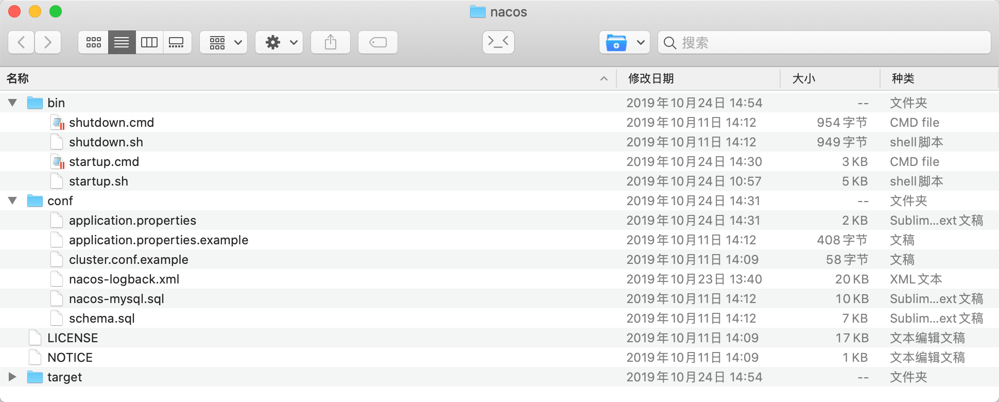
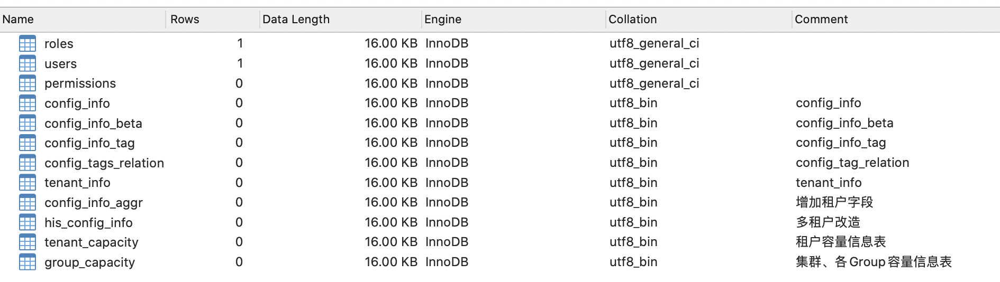
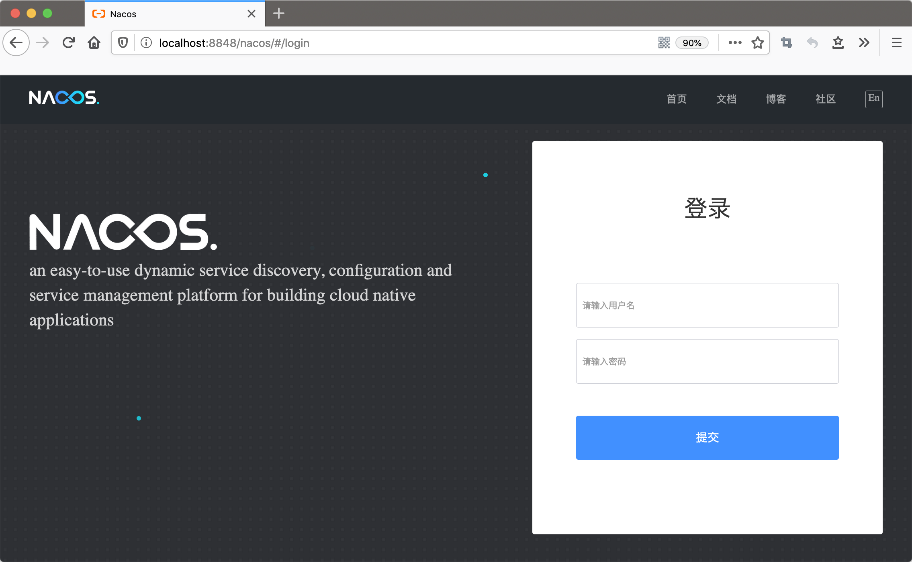
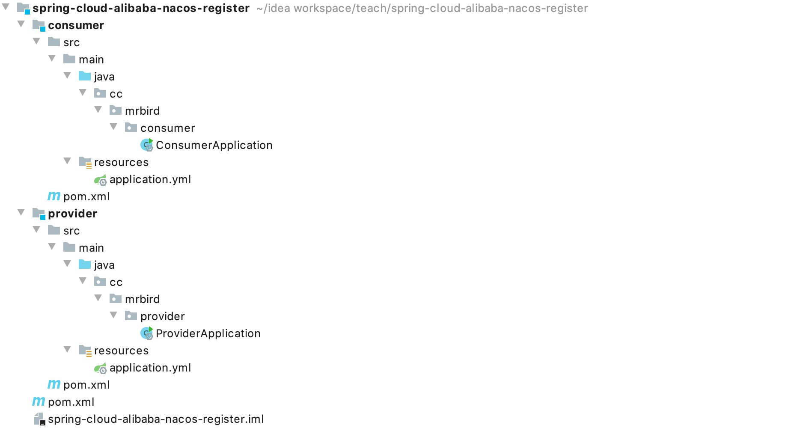
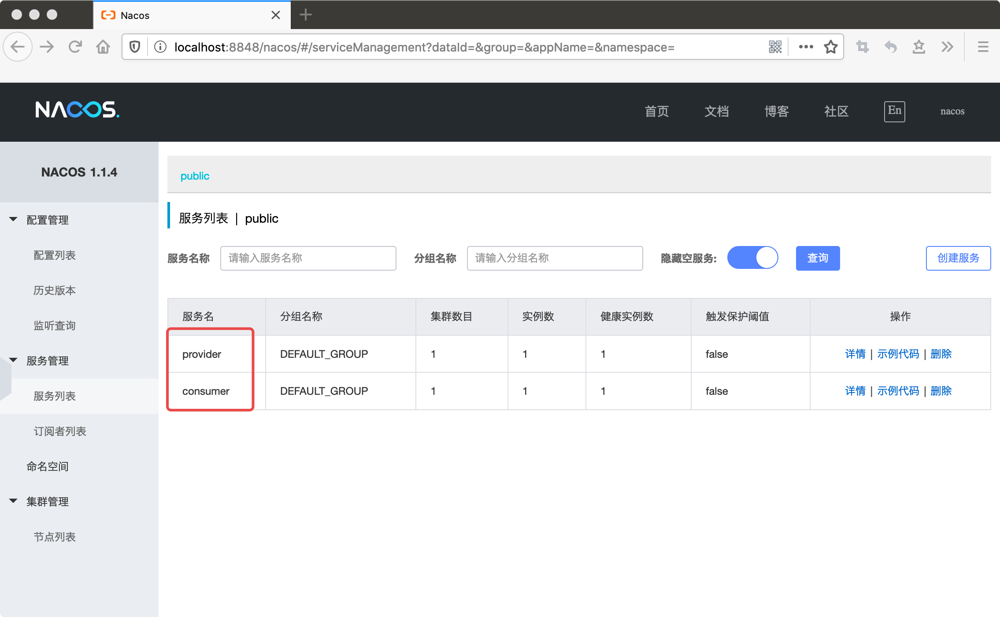
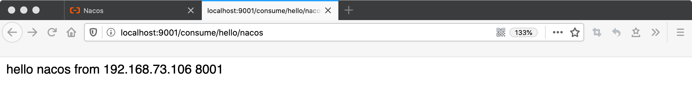
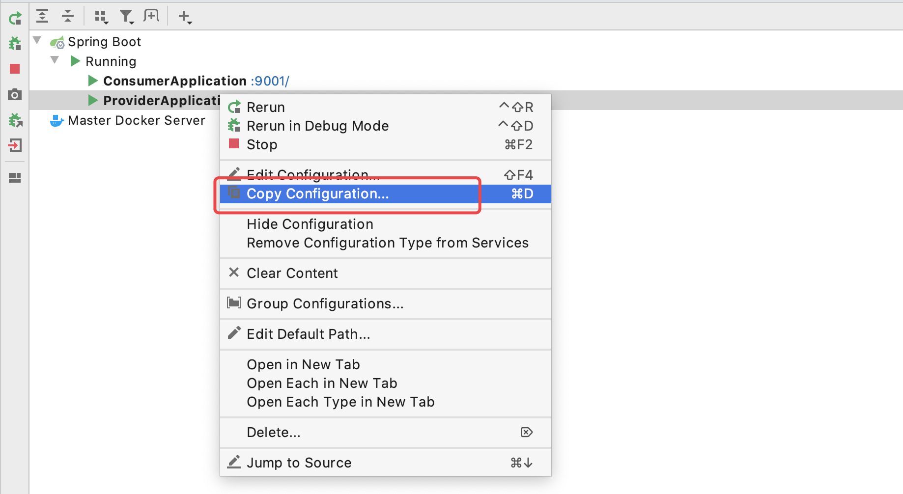
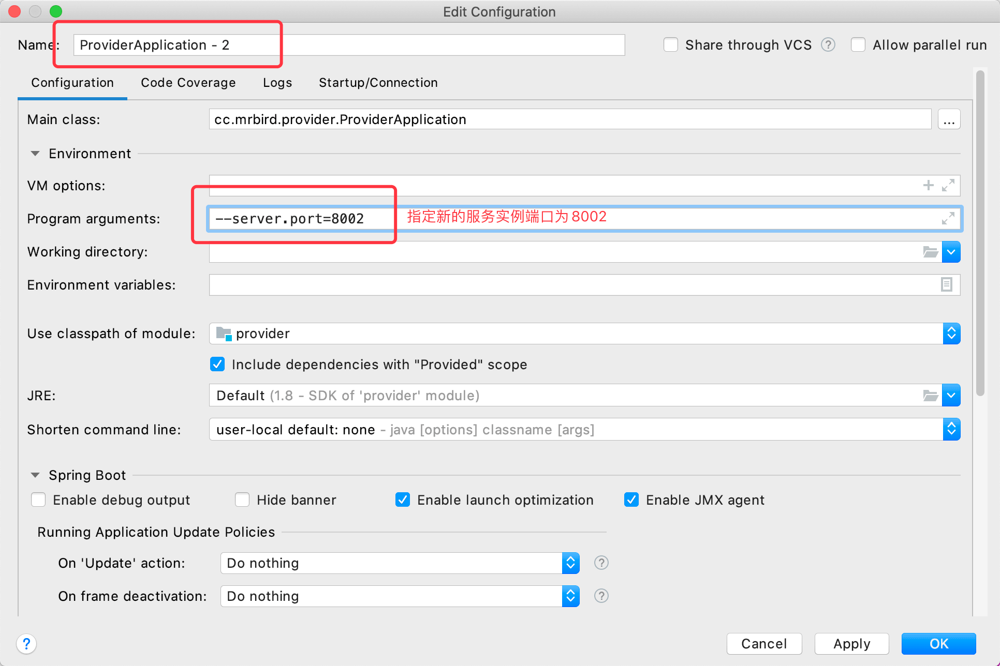
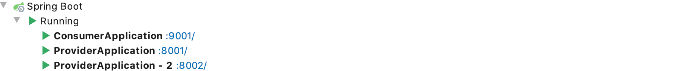
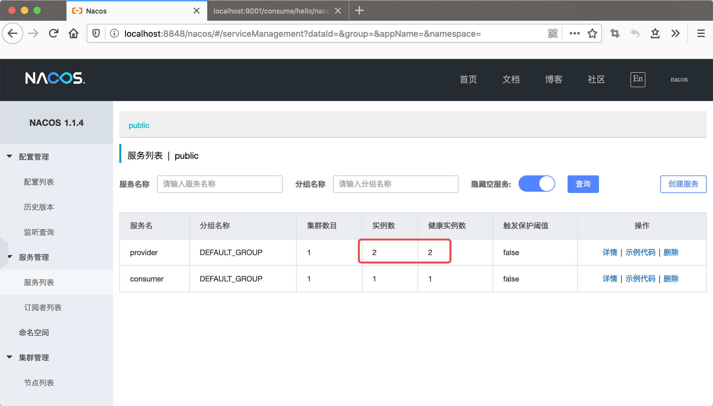

Nacos是一款集服务注册发现、服务配置和管理于一身的开源软件，这节主要记录Nacos的服务注册发现功能的使用。借助Spring Cloud Alibaba Nacos Discovery，我们可以轻松地使用Spring Cloud编程模型体验Nacos的服务注册发现功能。本节使用的Spring Cloud版本为Hoxton.SR3，Spring Cloud Alibaba版本为2.2.0.RELEASE，Spring Boot版本为2.2.3.RELEASE。
Nacos安装
因为Spring Cloud Alibaba 2.2.0.RELEASE内置的Nacos client版本为1.1.4，所以我们使用这个版本的Nacos。Nacos下载地址：https://github.com/alibaba/nacos/releases，选择nacos-server-1.1.4.zip 下载并解压：

解压后，打开conf目录下的配置文件，在末尾添加数据源配置：
1 | spring.datasource.platform=mysql |
然后在MySQL数据库中新建nacos数据库，并导入Nacos解压包conf目录下的nacos-mysql.sql脚本，导入后，库表如下图所示：

数据层准备好后，我们就可以启动Nacos了。笔者的电脑为Mac，所以这里以Unix环境为例。终端切换到Nacos解压目录下的bin目录，然后执行sh startup.sh -m standalone启动单机版Nacos。
为了方便，我们也可以创建一个run.sh脚本：
1 | #/bin/bash |
其中/Users/mrbird/Desktop/nacos为我的Nacos解压目录。启动后，浏览器访问：http://localhost:8848/nacos/#/login：

说明Nacos启动成功，账号密码都为nacos。
框架搭建
使用IDEA创建一个maven项目，artifactId为spring-cloud-alibaba-nacos-register，然后在其下面创建两个Module（Spring Boot项目），artifactId分别为consumer和provider，充当服务消费端和服务提供端，项目结构如下图所示：

spring-cloud-alibaba-nacos-register的pom内容：
1 |
|
因为本节演示的是Nacos的服务注册发现功能，所以引入的是spring-cloud-alibaba-nacos-discovery依赖。
provider的pom的内容如下所示：
1 |
|
consumer的pom内容如下：
1 |
|
Nacos作为注册中心
在provider的cc.mrbird.provider目录下新建controller包，然后在该包下新建HelloController：
1 |
|
提供了一个REST接口，供consumer调用。
然后在provider的项目配置文件application.yml里添加如下配置：
1 | server: |
server.port，provider服务端口为8001；spring.application.name，服务名称为providerspring.cloud.nacos.server-addr，指定Nacos注册中心的地址。
provider代码准备好后，接着在consumer项目的cc.mrbird.consumer目录下新建controller包，然后在该包下新建ConsumeController：
1 |
|
因为spring-cloud-alibaba-nacos-discovery内置了Ribbon，所以我们可以直接注入LoadBalancerClient，RestTemplate我们稍后再配置。hello()方法中我们通过服务提供者的名称provider（即provider项目配置的spring.application.name）从Nacos注册中心中获取对应的服务实例，然后访问其提供的/provide/{message} GET服务。这些在Spring Cloud Ribbon客户端负载均衡一节中都介绍过了，有不懂的可以参阅下。
接着在consumer项目的cc.mrbird.consumer目录下新建configure包，然后在该包下新建ConsumerConfigure：
1 |
|
上面代码配置了RestTemplate Bean。
最后在consumer项目的配置文件application.yml中添加如下配置：
1 | server: |
配置和provider项目类似，不再赘述。
分别启动provider和consumer项目：
观察Nacos控制台服务列表：

可以看到，两个服务都注册进来了。接着浏览器访问：http://localhost:9001/consume/hello/nacos：

调用成功，说明服务发现成功。
测试负载均衡
如下图所示，在ProviderApplication上右键选择Copy Configuration…：

然后按照下图所示填写相关内容：

点击ok保存后，启动它：

观察Nacos控制台，可以看到provider已经有两个实例了：

然后多次访问：http://localhost:9001/consume/hello/nacos，可以看到请求是均衡的（默认为轮询算法）：

Nacos注册中心配置
更多可用Nacos Descovery配置：
| 配置项 | Key | 默认值 | 说明 |
|---|---|---|---|
| 服务端地址 | spring.cloud.nacos.discovery.server-addr | 无 | Nacos Server 启动监听的ip地址和端口 |
| 服务名 | spring.cloud.nacos.discovery.service | ${spring.application.name} | 给当前的服务命名 |
| 服务分组 | spring.cloud.nacos.discovery.group | DEFAULT_GROUP | 设置服务所处的分组 |
| 权重 | spring.cloud.nacos.discovery.weight | 1 | 取值范围 1 到 100，数值越大，权重越大 |
| 网卡名 | spring.cloud.nacos.discovery.network-interface | 无 | 当IP未配置时，注册的IP为此网卡所对应的IP地址，如果此项也未配置，则默认取第一块网卡的地址 |
| 注册的IP地址 | spring.cloud.nacos.discovery.ip | 无 | 优先级最高 |
| 注册的端口 | spring.cloud.nacos.discovery.port | -1 | 默认情况下不用配置，会自动探测 |
| 命名空间 | spring.cloud.nacos.discovery.namespace | 无 | 常用场景之一是不同环境的注册的区分隔离，例如开发测试环境和生产环境的资源（如配置、服务）隔离等。 |
| AccessKey | spring.cloud.nacos.discovery.access-key | 无 | 当要上阿里云时，阿里云上面的一个云账号名 |
| SecretKey | spring.cloud.nacos.discovery.secret-key | 无 | 当要上阿里云时，阿里云上面的一个云账号密码 |
| Metadata | spring.cloud.nacos.discovery.metadata | 无 | 使用Map格式配置，用户可以根据自己的需要自定义一些和服务相关的元数据信息 |
| 日志文件名 | spring.cloud.nacos.discovery.log-name | 无 | |
| 集群 | spring.cloud.nacos.discovery.cluster-name | DEFAULT | 配置成Nacos集群名称 |
| 接入点 | spring.cloud.nacos.discovery.enpoint | UTF-8 | 地域的某个服务的入口域名，通过此域名可以动态地拿到服务端地址 |
| 是否集成Ribbon | ribbon.nacos.enabled | true | 一般都设置成true即可 |
| 是否开启Nacos Watch | spring.cloud.nacos.discovery.watch.enabled | true | 可以设置成false来关闭 watch |
本节源码链接：https://github.com/wuyouzhuguli/SpringAll/tree/master/74.spring-cloud-alibaba-nacos-register。